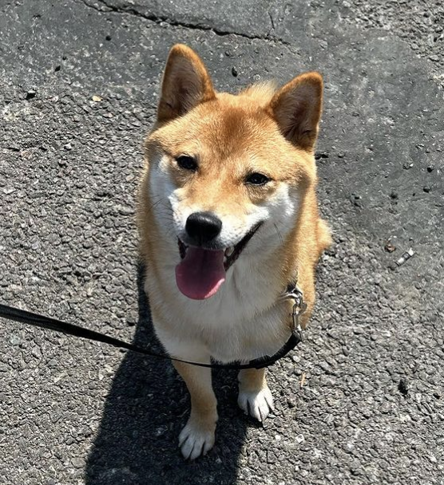

🐾
Walks with my Shiba
A walk is one of my favorite parts of the day. With my Shiba by my side, an ordinary afternoon feels a little brighter.
Life, learning, and a little curiosity.
A corner for the things I love
and the person I’m becoming.

I’m Kaiyi He, based in New York. I enjoy walking my Shiba Inu, organizing things, and exploring new products and technologies. My interests often move between everyday life and the world of tech.
From studying information systems to technical support, marketing operations, and content creation, each experience has given me something new to learn. This space holds those experiences and the little joys along the way.
A walk is one of my favorite parts of the day. With my Shiba by my side, an ordinary afternoon feels a little brighter.
New products, new technologies, and plenty of questions. I enjoy taking a closer look and figuring out how things work.
Exploring poster design, social content, and image editing — bringing an idea to life, one small detail at a time.
Supporting Zhengxin Chicken Steak’s brand promotion in the U.S. through posters, social media content, and organized operational records.
Earned the CompTIA Security+ certification and built a foundation in cybersecurity.
Hands-on experience with POS systems, payment devices, computer setup, and troubleshooting — and learning to explain technical issues clearly.
Completed a BBA in Computer Information Systems.
Built a personal website from a template with my professor’s guidance, alongside classroom machine learning projects.
Visit my earlier website ↗
Thanks for visiting my little corner of the world.
More everyday moments to come.